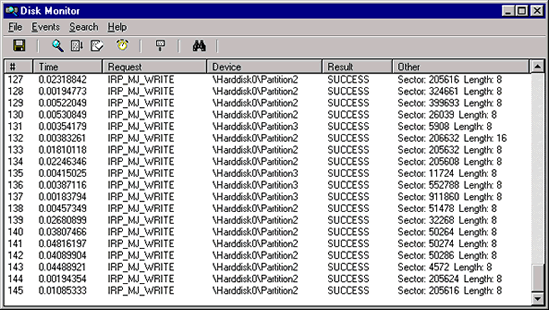

DiskMon is an application that logs and displays all hard disk activity on a Windows system. You can also minimize DiskMon to your system tray where it acts as a disk light, presenting a green icon when there is disk-read activity and a red icon when there is disk-write activity.
DiskMon works on NT 4.0 and higher.
Installing DiskMon is as easy as unzipping it and typing, "diskmon." On Windows NT the GUI dynamically loads the driver (based on code from the instdrv sample in the Windows NT DDK), which begins monitoring all hard drives. On Windows 2000 and higher there is no driver component: the GUI relies on kernel event tracing to obtain disk activity. The menus and toolbar buttons can be used to disable event capturing, control the scrolling of the listview, and to save the listview contents to an ASCII file.
To have DiskMon function as a disk light in your system tray, select the Options|Minimize to Tray menu item, or start DiskMon with a "/l" (lower-case L) command-line switch e.g. diskmon /l. To reactivate the DiskMon window double-click on the DiskMon tray icon. To create a shortcut to Diskmon in the tray create a shortcut in your Program Files\Startup folder, edit the properties of the shortcut and set the Target to point at the executable with the path in quotations and the switch outside the quotes:
"C:\Sysinternals Tools\Diskmon.exe" /l
Read and write offsets are presented in terms of sectors (512 bytes). Events can be either timed for their duration (in microseconds), or stamped with the absolute time that they were initiated. The History Depth dialog can be used to specify the maximum number of records that will be kept in the GUI (0 signifies no limit).
Using standard filtering techniques it is not possible for a dynamically loaded driver like DiskMon to attach to hard disk device objects and see requests originating in file systems.This is because file system drivers open disk devices during system initialization and, unlike the I/O Manager, file system drivers send IRPs directly at these devices. The I/O Manager allows for file system filter drivers to attach to file system devices after initialization because it checks for attached devices whenever it is going to send an Irp to a file system, and will direct the Irps to them instead.
DiskMon overcomes this limitation by using the technique I've developed of driver function interception. DiskMon locates a disk device's driver object and replaces the driver's dispatch entry points with its own. The DiskMon filter functions pass Irps it sees onto the hooked driver, and also intercepts completion routines in a similar way so that it can see the results of requests.
On Windows 2000 and higher Diskmon uses kernel event tracing. Event tracing is documented in the Microsoft Platform SDK and the SDK contains source code to TraceDmp, on which Diskmon is based.
Download Diskmon for Windows NT 4 (44 KB)
Download Diskmon for Windows 2000/XP/2K3 (55 KB)